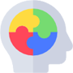

<!--
  Generated template for the MenudoctorPage page.

  See http://ionicframework.com/docs/components/#navigation for more info on
  Ionic pages and navigation.
-->
<ion-header>

  <ion-navbar>
    <ion-title>Menu</ion-title>
  </ion-navbar>

</ion-header>


<ion-content padding text-center>
  <ion-col col-md-3 push-md-3>
    <div (click)="p5()">
        
        <ion-item>
          <ion-label text-center>บทความรู้</ion-label>
          
        </ion-item>
      </div>
</ion-col>

<ion-col col-md-6 push-md-3>
  <div (click)="p6()">
      
      <ion-item>
        <ion-label text-center>กระทู้</ion-label>
        
      </ion-item>
    </div>

    <ion-col col-md-3 pull-md-3>
                  <div (click)="p7()">
                      
                      <ion-item>
                        <ion-label text-center>เกมส์</ion-label>
                        
                      </ion-item>
                    </div>
              </ion-col>

</ion-col>

</ion-content>
